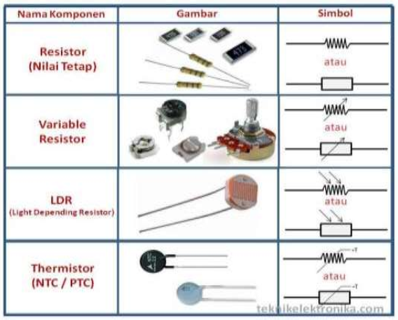
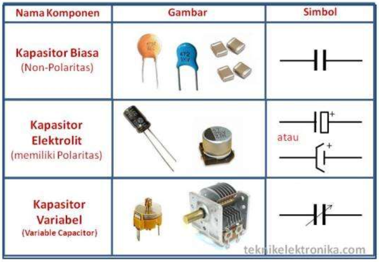
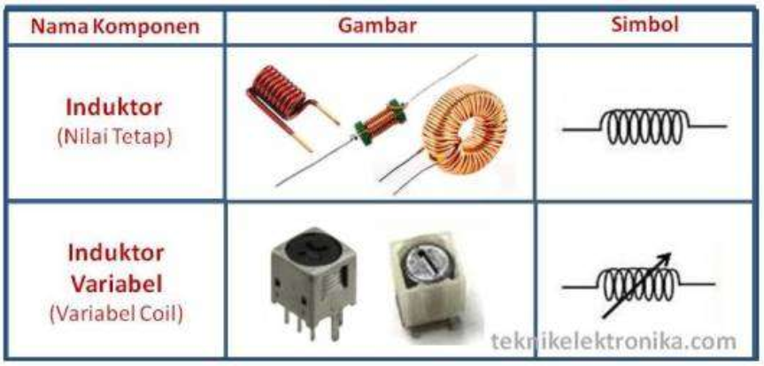
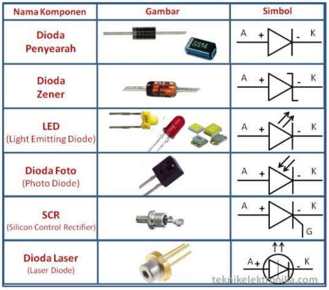
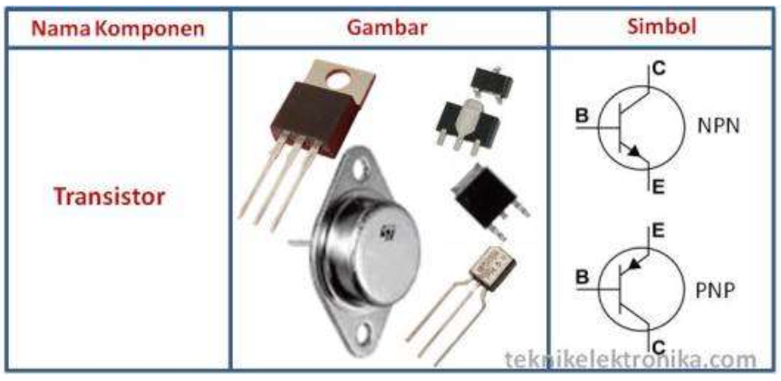
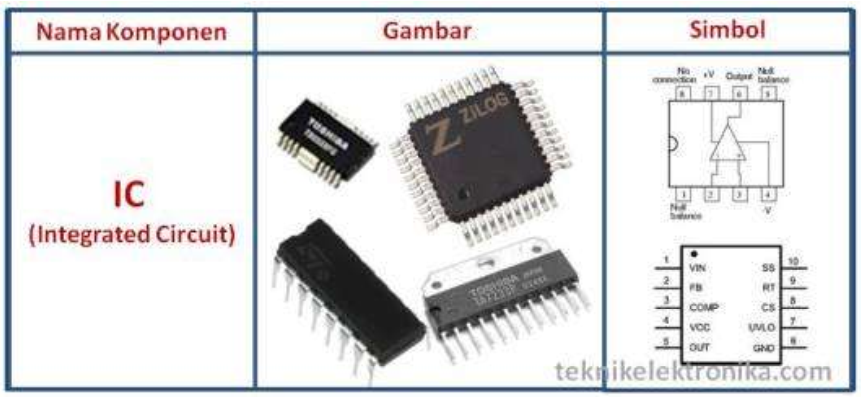
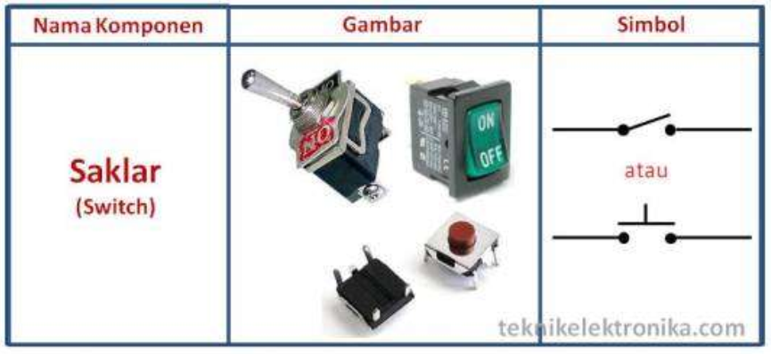

Resistor atau disebut juga dengan Hambatan adalah Komponen Elektronika Pasif yang berfungsi untuk menghambat dan mengatur arus listrik dalam suatu rangkaian Elektronika. Satuannya Ohm ($\Omega$). Nilainya biasanya diwakili dengan Kode angka ataupun Gelang Warna yang terdapat di badan Resistor. Hambatan Resistor sering disebut juga dengan Resistansi atau Resistance.
Jenis-jenis Resistor diantaranya adalah :
Gambar dan simbol resistor :
Kapasitor atau disebut juga dengan Kondensator adalah Komponen Elektronika Pasif yang dapat menyimpan energi atau muatan listrik dalam sementara waktu. Fungsi-fungsi Kapasitor (Kondensator) diantaranya adalah dapat memilih gelombang radio pada rangkaian Tuner, sebagai perata arus pada rectifier dan juga sebagai Filter di dalam Rangkaian Power Supply (Catu Daya). Satuannya adalah Farad (F)
Jenis-jenis Kapasitor diantaranya adalah :
Gambar dan simbol kapasitor :
Induktor atau disebut juga dengan Coil (Kumparan) adalah Komponen Elektronika Pasif yang berfungsi sebagai Pengatur Frekuensi, Filter dan juga sebagai alat kopel (Penyambung). Induktor atau Coil banyak ditemukan pada Peralatan atau Rangkaian Elektronika yang berkaitan dengan Frekuensi seperti Tuner untuk pesawat Radio. Satuan Induktansi untuk Induktor adalah Henry (H).
Jenis-jenis Induktor diantaranya adalah :
Gambar dan simbol induktor :
Diode adalah Komponen Elektronika Aktif yang berfungsi untuk menghantarkan arus listrik ke satu arah dan menghambat arus listrik dari arah sebaliknya. Diode terdiri dari 2 Elektroda yaitu Anoda dan Katoda.
Berdasarkan Fungsi Dioda terdiri dari :
Gambar dan simbol dioda :
Transistor merupakan Komponen Elektronika Aktif. Beberapa fungsi Transistor diantaranya adalah sebagai Penguat arus, sebagai Switch (Pemutus dan penghubung), Stabilitasi Tegangan, Modulasi Sinyal, Penyearah dan lain sebagainya. Transistor terdiri dari 3 Terminal (kaki) yaitu Base/Basis (B), Emitor (E) dan Collector/Kolektor (K). Berdasarkan strukturnya, Transistor terdiri dari 2 Tipe Struktur yaitu PNP dan NPN. UJT (Uni Junction Transistor), FET (Field Effect Transistor) dan MOSFET (Metal Oxide Semiconductor FET) juga merupakan keluarga dari Transistor.
Gambar dan simbol transistor :
IC (Integrated Circuit) adalah Komponen Elektronika Aktif yang terdiri dari gabungan ratusan bahkan jutaan Transistor, Resistor dan komponen lainnya yang diintegrasi menjadi sebuah Rangkaian Elektronika dalam sebuah kemasan kecil. Bentuk IC (Integrated Circuit) juga bermacam-macam, mulai dari yang berkaki 3 (tiga) hingga ratusan kaki (terminal). Fungsi IC juga beraneka ragam, mulai dari penguat, Switching, pengontrol hingga media penyimpanan. Pada umumnya, IC adalah Komponen Elektronika dipergunakan sebagai Otak dalam sebuah Peralatan Elektronika. IC merupakan komponen Semi konduktor yang sangat sensitif terhadap ESD (Electro Static Discharge)
Sebagai Contoh, IC yang berfungsi sebagai Otak pada sebuah Komputer yang disebut sebagai Microprocessor terdiri dari 16 juta Transistor dan jumlah tersebut belum lagi termasuk komponen-komponen Elektronika lainnya.
Gambar dan simbol IC (Integrated Circuit) :
Saklar adalah Komponen yang digunakan untuk menghubungkan dan memutuskan aliran listrik. Dalam Rangkaian Elektronika, Saklar sering digunakan sebagai ON/OFF dalam peralatan Elektronika
Gambar dan simbol saklar (switch) :
